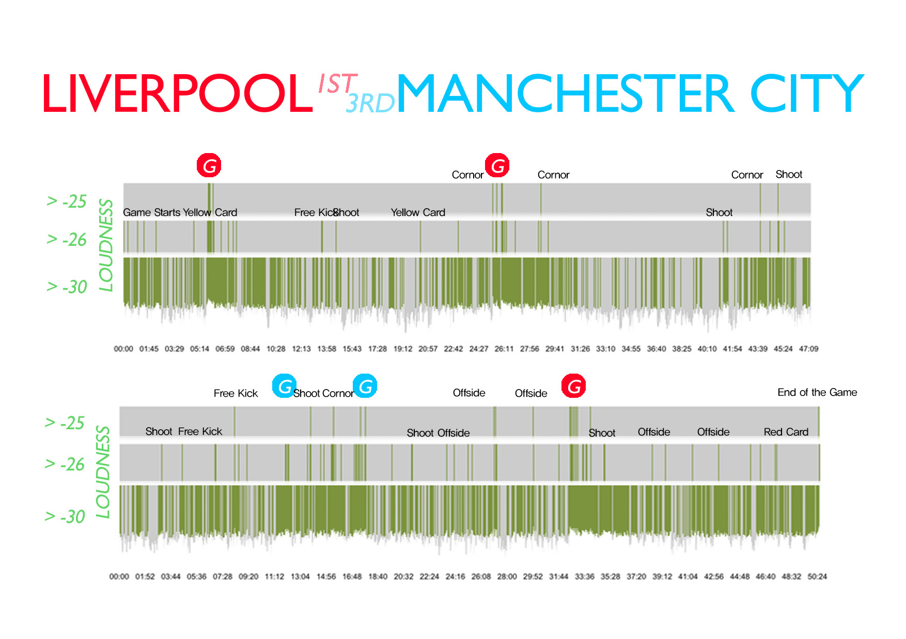
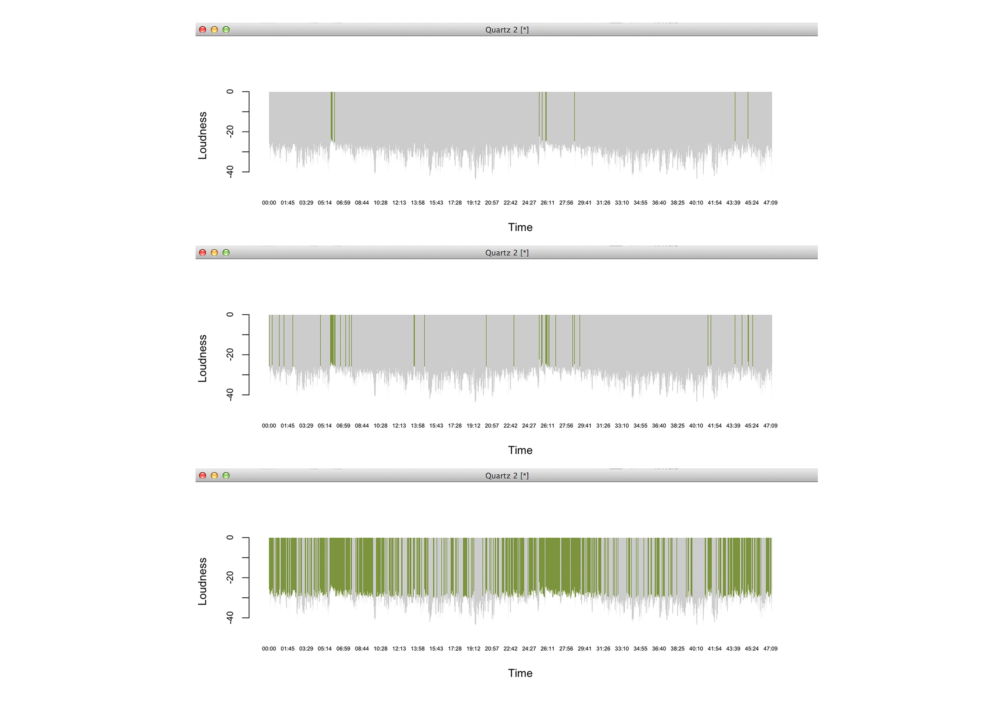

Data Visualization
Liverpool VS Manchester City
Course Assignment
Copyright is held by the owner/author(s).
Seoul National University, 2014 Spring Semester, Information Visualization
Introduction
On Apr. 14 2014, there was the most dynamic and important match in 13-14 English Premier League.
Liverpool was only five wins away from their first league title since 1990. Manchester city
was 3rd on table, but there were only 4 points gap between two teams. Here's
more description
of this game by BBC.
As a football fan, I watched this game live on TV, and I found that shouts of spectators
were fluctuating along the game's aspect. I found the match video later to capture the loudness
of the sound and compared it to the game's important moments.

Liverpool VS Manchester City
Created by Jeseok Lee. Audacity to record and export audio data. Visualization with R, Graphic with Adobe Photoshop.
Data visualization with R
By using Audacity, I captured loudness of the sound 5 times a second, total 30,000 number of loudness data.
The whole dataset was visualized in R. I highlighted the bar with threshold of -25, -26, and -30.
Here are 3 bar graphs that are differently highlighted.

Bar graphs highlighted with different threshold. Bar graphs drawn with R.
Relationship between match data and graph
After combining three graphs, I tried to match the data and loud moment of the game.
Here's final result of it.
At high-loudness moments, I could find important match data such as shot, scoring, cornor kick,
free kick, and offside. I also could see how the match was getting hot. Shouts were very loud
when Liverpool scored first two goals. Shouts lasted for a long time after each score because
it was their home stadium. When Man City scored second goal, shout was loud but it didn't last
long - maybe that was a huge sigh. You can read it by seeing sparse green bars right after
City's second goal.
But the game was heated up again as Liverpool counterattacked.
After Liverpool scored the winning goal, shouts lasted until the end of the game.
Conclusion
There are many services that provide highlight video of the game. Using this method,
it can automatically recognize important point of the game and generate highlight video.
There are robot journalism algorithm based on match data, but this method can include
crowd's emotion into making highlight films.